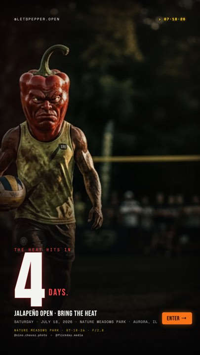
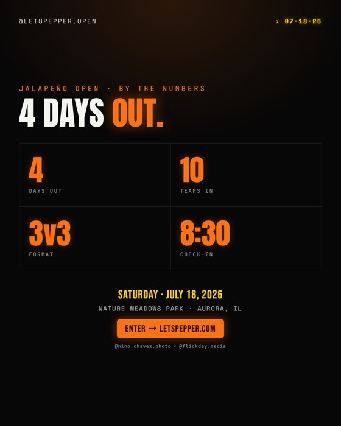
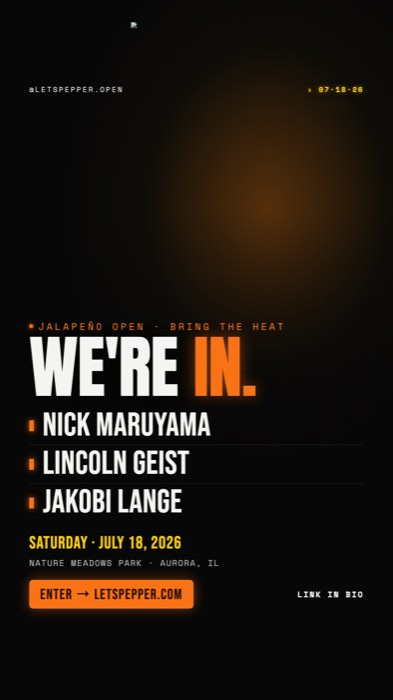
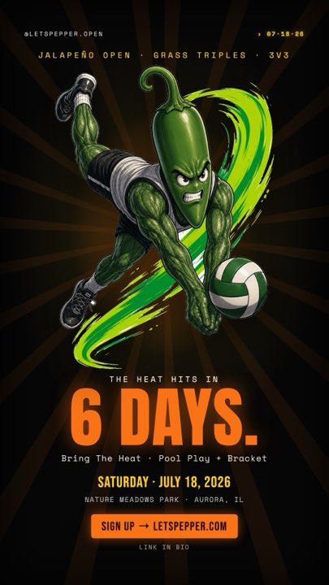
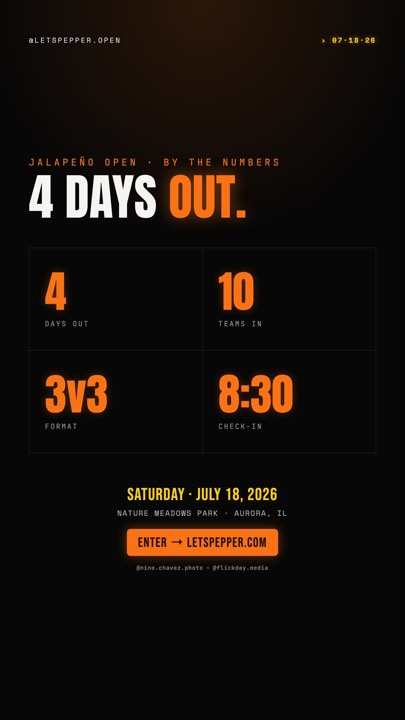
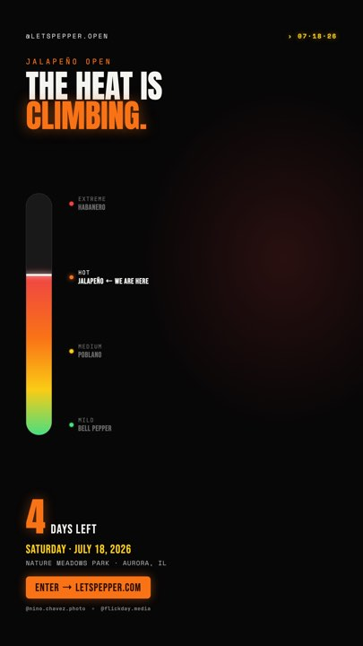

WAYS OF WORKING · DEMO 01 NINO CHAVEZ
Everything I typed to take a live event from spreadsheet chaos to published social content. An AI agent did the production — this is the split, and the method behind it.
→ or scroll to advance · ← to go back
02 THE JOB
A real tournament, four days from first serve. The state of the world that afternoon:
The data
Team signups split across a Google Form response sheet and a hand-curated tab. Spelling variants of the same captain. One player's name filed in the team-name column.
The system
The tournament platform's production database still held five stale test teams from an earlier dry run. The graphics pipeline's roster file held placeholder names.
The channel
Instagram needed a countdown and a team announcement — and the existing countdown template had gone stale, reusing the same visual DNA as everything already posted.
One working session. Twelve typed messages. Everything else was delegated.
03 WHAT SHIPPED
The session's output: production roster reconciled, three countdown directions built as working templates, two published to the live account. Nothing on these graphics was hand-set — every number and name was read from data at render time.



04 THE WHOLE CONVERSATION
reconcile the teams list in [sheet: "mens team list"] and [sheet: signup form] for the event [tournament admin URL] so that we have the correct teams setup in our rally-hq db
Read both sheets through an authenticated browser, resolved spelling conflicts and a misfiled name, deleted five stale test teams, wrote ten real ones through the product API.
remove [captain] - that team dropped out
One team out; roster renumbered in the database and in the file the graphics read.
build a story and post to announce countdown and team numbers/list
The agent researched its own pipeline first — precedent templates, brand rules, posting cadence — then drafted.
open in finder
Human eyeballs on the renders. Cheap, fast, decisive.
the countdown is too derivative of the previous assets. let's switch it up. brainstorm and get more creative within the brand
A creative rejection with the constraint attached: new directions, same brand system.
why choose? do all three
Three brainstormed concepts became three working templates in one pass.
these work. we now have three separate folders of assets. reorg and cleanup
Approval and a hygiene order in one line.
but why three folders at all?
The agent had justified the structure from an unverified assumption. The question forced a real check — the repo's actual convention was one folder per event.
pick gritty-field for the story, stat-board for the feed
The one call only a human should make.
go
Publish authorization. Feed post and story went live through the API.
tag nino.chavez.photo and flickday.media on all
Arrived mid-publish — and surfaced a hard API constraint. Slide 09 tells that story.
the cross tag is for collaboration as me as the content capture and flickday media as the media studio across the event
Intent, not mechanics. The credit became a standing element baked into every template.
Messages verbatim from the session transcript. Links and personal names redacted; annotations added.
Not one of these is production work. The judgment stayed human; the keystrokes didn't.
05 THE METHOD
The deliverable is a parameterized template; every graphic is a compiled artifact. Change the data, re-render in seconds. This is the whole distance between this method and "I asked a chatbot for an image."
Brand palette, voice rules, and layout conventions are versioned files the agent reads every session. "Get creative within the brand" works because the brand is written down.
Roster changes happen in the product database, through its API. The graphics read from that. Nobody edits a PNG when a team drops out.
Direction, taste, and authorization were typed by a person. Genuine ambiguity came back as a question with the constraint attached — never a silent guess.
Every publish is recorded in a queue ledger, with the asset in object storage. When files got deleted by mistake, the record rebuilt them.
06 THE PIPELINE
Every hop is ordinary, boring infrastructure. The agent's job is writing and operating the middle — humans own the ends.
Why HTML/CSS instead of image generation: exact numbers, real brand fonts, deterministic re-renders. A countdown that says "4 days" must say 4 — data-driven graphics need templates, not samples from a model.
07 TEMPLATES, NOT OUTPUTS
The rejected countdown reused the visual DNA of everything already posted. One correction produced three genuinely different directions — each a working, parameterized template, not a one-off image.



Same reason the roster cards were free: ten cards rendered from the same data file, zero hand layout. When the output is compiled, iteration is cheap and corrections are absorbed by the template — permanently.
08 JUDGMENT STAYS HUMAN
Three moments where the right move was a question — each surfaced with the constraint attached, so the human decision took seconds.
Ambiguous data
A team appeared in the raw form responses but not the curated list. Signal or noise?
Asked, with both sources cited. Human: include it.
Ambiguous intent
"Tag both accounts on all" — but these graphics contain no photography. Photo credit on a stat board would misattribute.
Asked what the tag means. Human: it's a standing collaboration credit — which changed where it lives: baked into every template.
Irreversible action
The tag request arrived after the feed post was live — and published captions can't be edited through the API.
Options presented with the constraint. Human: fix manually in-app.
Escalation is a feature, not a failure. The skill is surfacing the decision with its constraint — not answering it.
09 WHEN IT BROKE
The wildcard delete
During cleanup, a wildcard rm wiped output folders — including two already-published assets. The publish ledger pointed at object storage, and both files came back byte-for-byte identical.
One never-published render fell outside every safety net. It's gone, and the loss was reported as exactly that — not glossed.
Lesson: design for recovery, not perfection. Ledgers beat memory. And honest failure reports are part of the method.
The API said no
Instagram Stories accept bare media only — no captions, no tags, no stickers through the API. "Credit both studios on everything" was impossible at publish time.
So the requirement moved up a layer: the credit is now rendered into every template's pixels. Every future asset carries it automatically.
Lesson: when a constraint is hard, don't fight it — change the layer where you solve the problem.
10 YOUR VERSION OF THIS
If you never touch code
The twelve messages are the skill: direct, correct, challenge, decide, authorize. Delegation quality is what you're actually practicing.
If you're technical
Make the agent produce templates and scripts, not final files. Reproducibility is the difference between a trick and a pipeline.
If you build systems
Give agents APIs and ledgers. Keep source-of-truth writes on rails, and recovery becomes a property of the design, not a heroic effort.
11 APPENDIX · UNDER THE HOOD
The agent checks its own work
Before any human review, the agent rendered each template and visually inspected the output — and fixed three real layout bugs it found: a string-split bug duplicating a location line, a flexbox gap eating the vertical middle of a card, and a gauge marker aligned to the wrong rung.
Verification against the artifact, not the code. "It compiled" is not "it looks right."
The repo is the memory
Project conventions, the brand system, and known landmines live as versioned docs in the repository. Every session starts by reading them — nothing is re-briefed, and corrections outlive the conversation they happened in.
That's why message 05 could say "within the brand" and mean something enforceable.